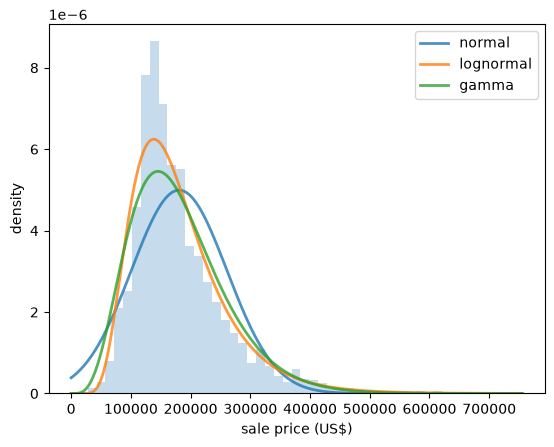
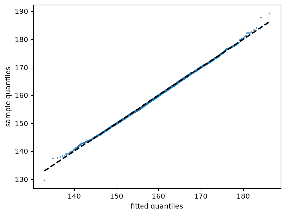
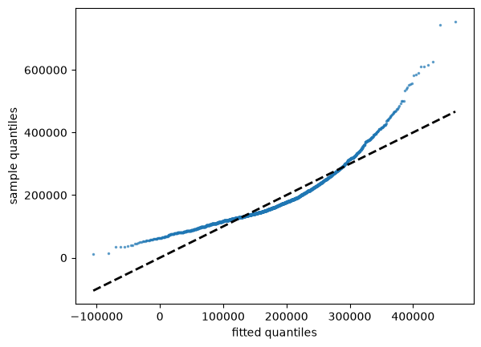
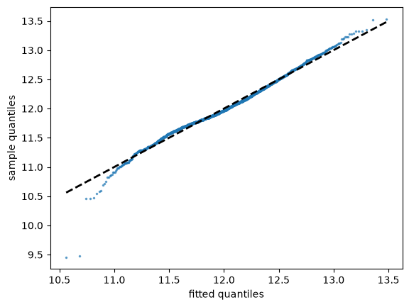
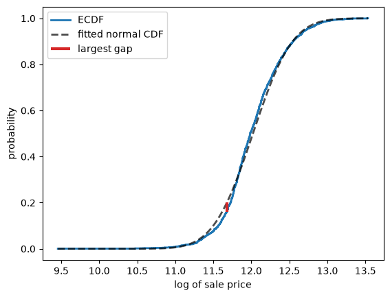
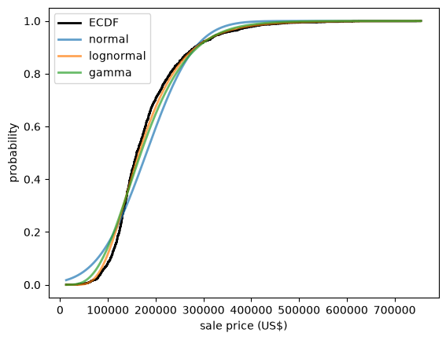
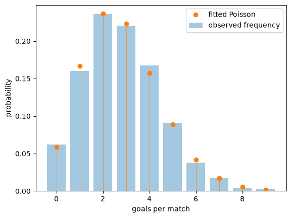
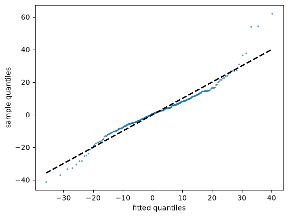
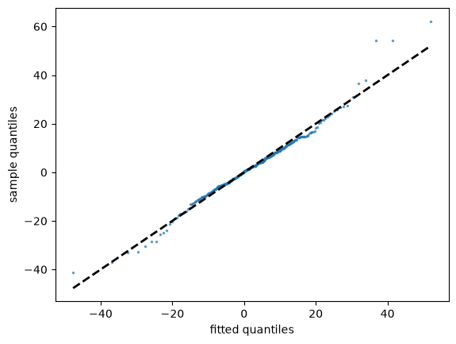

20. 为数据拟合分布#
20.1. 概述#
在 概率分布 中，我们研究了一系列常见的概率分布。
在 观测分布 中，我们研究了观测数据。
在本讲座中，我们将两者联系起来，探讨一个在应用工作中不断出现的问题：
给定一个数据集，我们应该用哪种概率分布来描述它？
这个问题包含两个部分。
首先，我们必须选择一个参数类——一组由少量参数索引的分布。
例如，正态分布族就是一个参数类，由均值 \(\mu\) 和标准差 \(\sigma\) 索引。
泊松分布族则是另一个参数类，由单一参数 \(\lambda\) 索引。
其次，在选定一个类别之后，我们必须在其中选择使拟合尽可能接近的参数。
本讲座主要讨论第一部分。
对于第二部分，我们只使用一种技术，称为矩方法，更全面的处理留给 最大似然估计。
即便如此，我们还是从参数开始讲起，因为要评判一个类别，我们首先必须能够对其进行拟合。
!pip install --upgrade yfinance
import matplotlib.pyplot as plt
import pandas as pd
import numpy as np
import yfinance as yf
import scipy.stats
np.set_printoptions(legacy='1.25') # print scalars as plain numbers
让我们使用我们在 观测分布 中接触过的埃姆斯（Ames）房价数据。
url = ('https://github.com/QuantEcon/data-lectures/raw/main/'
'lectures/ames_house_prices.csv')
houses = pd.read_csv(url)
price = houses['price']
20.2. 矩方法#
假设我们已经确定了一个参数类，现在想选择其参数。
一种简单而通用的策略是矩方法。
如果该类别有 \(k\) 个参数，我们
计算数据的前 \(k\) 个样本矩，
将相应的总体矩写成参数的函数，并且
选择使这两组数值相等的参数。
实际上，我们是在要求分布重现我们认为最重要的数据特征。
我们在 概率分布 中已经使用过一次这种思路，当时我们为美国成年人的身高拟合了一个正态分布。
正态分布有两个参数，所以我们使用了两个矩：将 \(\mu\) 设为样本均值，将 \(\sigma\) 设为样本标准差。
让我们把同样的思路应用到房价数据上，使用两个定义在 \((0, \infty)\) 上的类别，从而尊重价格为正这一事实。
对数正态分布有参数 \(\mu\) 和 \(\sigma\)，满足
将它们分别设为样本均值 \(\bar x\) 和样本方差 \(s^2\) 并求解，得到
伽马分布有参数 \(\alpha\) 和 \(\beta\)，均值为 \(\alpha / \beta\)，方差为 \(\alpha / \beta^2\)。
以同样的方式求解在这里更简单：
让我们实现全部三种拟合。
def fit_normal(sample):
return scipy.stats.norm(sample.mean(), sample.std())
def fit_lognormal(sample):
m, v = sample.mean(), sample.var()
σ_squared = np.log(1 + v / m**2)
μ = np.log(m) - σ_squared / 2
return scipy.stats.lognorm(s=np.sqrt(σ_squared), scale=np.exp(μ))
def fit_gamma(sample):
m, v = sample.mean(), sample.var()
return scipy.stats.gamma(a=m**2 / v, scale=v / m)
每个函数返回的都是我们在 概率分布 中使用过的那种分布对象。
让我们检查一下，拟合出的对数正态分布是否如设计那样重现了数据的均值和方差。
u = fit_lognormal(price)
u.mean(), price.mean()
(180796.06006825934, 180796.0600682594)
u.var(), price.var()
(6381883615.688435, 6381883615.6884365)
现在，让我们把三个拟合密度绘制在数据的直方图上进行对比。
fits = {'normal': fit_normal(price),
'lognormal': fit_lognormal(price),
'gamma': fit_gamma(price)}
x_grid = np.linspace(0, price.max(), 400)
fig, ax = plt.subplots()
ax.hist(price, bins=50, density=True, alpha=0.25, color='C0')
for label, u in fits.items():
ax.plot(x_grid, u.pdf(x_grid), lw=2, alpha=0.8, label=label)
ax.set_xlabel('sale price (US$)')
ax.set_ylabel('density')
ax.legend()
plt.show()
{kind=link}

Fig. 20.1 Three fitted densities for house prices#
正态密度显然是错的：它是对称的，而数据并不对称，而且它还在负价格上赋予了权重。
另外两个看起来是合理的。
要在它们之间做出选择，我们需要比看一眼图形更精确的方法。
20.3. Q-Q 图#
Q-Q 图（分位数-分位数图的简称）通过将两个分布的分位数相互对照绘图来比较它们。
要将样本与拟合分布进行比较，我们先对数据排序
\(x_{(i)}\) 估计的是哪个分位数？
回想一下 观测分布 中的内容，ECDF 在每个观测点处跳升 \(1/n\)。
在 \(x_{(i)}\) 处，它从 \((i-1)/n\) 跳升到 \(i/n\)。
换句话说，有一部分 \((i-1)/n\) 的观测值严格小于 \(x_{(i)}\)，而有一部分 \(i/n\) 的观测值小于或等于它。
所以数据并没有唯一确定 \(x_{(i)}\) 所要估计的那个分位数——它们提供的是一个小区间。
通常的折中做法是取中间值，将 \(x_{(i)}\) 视为阶数为 \((i - 0.5)/n\) 的分位数的估计值。
这种选择还避免了样本顶端的一个问题。
如果我们使用 \(i/n\)，那么最大的观测值会与阶数为 \(n/n = 1\) 的分位数相匹配，而对于正态分布、对数正态分布以及我们所使用的其他无界分布，该分位数为 \(+\infty\)。
如果拟合分布很好地描述了数据，那么 \(x_{(i)}\) 应该接近该分布对应的分位数，即
Note
还有其他惯例在使用，例如 \(i/(n+1)\) 和 \((i - 0.375)/(n + 0.25)\)。
它们被称为绘图位置，不同的选择只会影响图形的两端，且随着 \(n\) 的增长，其影响会缩小。
因此，我们将拟合出的分位数绘制在横轴上，样本值绘制在纵轴上。
一个良好的拟合会将点落在 45 度线上。
def qq_plot(sample, u, ax, **kwargs):
"Plot sample quantiles against the quantiles of the distribution u."
x_sorted = np.sort(sample)
n = len(x_sorted)
p = (np.arange(1, n+1) - 0.5) / n
ax.plot(u.ppf(p), x_sorted, '.', ms=3, alpha=0.6, **kwargs)
lo, hi = u.ppf(p[0]), u.ppf(p[-1])
ax.plot([lo, hi], [lo, hi], 'k--', lw=2)
ax.set_xlabel('fitted quantiles')
ax.set_ylabel('sample quantiles')
让我们从一个我们预期会拟合良好的例子开始。
在 观测分布 中，我们发现美国成年女性的身高样本偏度和超额峰度都接近于零。
url = ('https://github.com/QuantEcon/data-lectures/raw/main/'
'lectures/us_adult_heights.csv')
heights = pd.read_csv(url)
female = heights[heights['sex'] == 'female']['height_cm']
fig, ax = plt.subplots()
qq_plot(female, fit_normal(female), ax)
plt.show()
{kind=link}

Fig. 20.2 Female heights against a fitted normal#
这些点几乎完全落在直线上，只是在两端有轻微的偏离，因为样本中在这些区域的观测值较少，分位数估计带有噪声。
现在让我们尝试将房价数据与拟合的正态分布进行比较。
fig, ax = plt.subplots()
qq_plot(price, fit_normal(price), ax)
plt.show()
{kind=link}

Fig. 20.3 House prices against a fitted normal#
这是一幅截然不同的图景。
点偏离了直线，而且这种偏离有明确的含义：靠右侧的样本分位数远大于拟合分位数，这说明数据的右尾比正态分布所允许的要长得多。
偏离的形状告诉我们拟合失败的方式。
像这里一样向上弯曲的点表示右偏。
呈 S 形的点——左侧在直线下方，右侧在直线上方——表示数据的两侧尾部都比拟合分布更重。
让我们通过取对数来检验第二种情况，我们知道取对数会使房价数据大致对称。
log_price = np.log(price)
fig, ax = plt.subplots()
qq_plot(log_price, fit_normal(log_price), ax)
plt.show()
{kind=link}

Fig. 20.4 Log house prices against a normal#
弯曲消失了，这证实了我们在 观测分布 中通过样本偏度得到的结论。
Note
statsmodels 包提供了 sm.qqplot，它可以用一行代码生成此类图形，默认将数据与正态分布进行比较。
我们之所以自己构建了一个版本，部分原因是这种构造本身值得理解，部分原因是我们的版本可以将数据与我们选择的任何分布进行比较，正如我们下面所做的那样。
20.4. 科尔莫戈罗夫-斯米尔诺夫统计量#
Q-Q 图很有信息量，但它们需要我们对图形做出判断。
有时我们想要一个单一的数字来衡量数据与拟合分布之间的差距。
一种自然的度量方法是，将我们在 观测分布 中接触过的数据的 ECDF 与拟合分布的 CDF 进行比较。
科尔莫戈罗夫-斯米尔诺夫统计量是两者之间最大的垂直差距：
由于 \(F_n\) 只在观测值处跳跃，我们可以通过检查每次跳跃前后的差距来计算 \(D\)。
def ks_statistic(sample, u):
"Largest vertical distance between the ECDF of the sample and the CDF of u."
x_sorted = np.sort(sample)
n = len(x_sorted)
F = u.cdf(x_sorted)
above = np.arange(1, n+1) / n - F # gap just after each jump
below = F - np.arange(0, n) / n # gap just before each jump
return max(above.max(), below.max())
让我们通过绘制对数价格的 ECDF 与拟合 CDF，以及取得最大值的那个差距，来看看它衡量的是什么。
u = fit_normal(log_price)
x_sorted = np.sort(log_price)
n = len(x_sorted)
F = u.cdf(x_sorted)
# locate the largest gap
gaps = np.maximum(np.arange(1, n+1) / n - F, F - np.arange(0, n) / n)
i = gaps.argmax()
fig, ax = plt.subplots()
ax.step(x_sorted, np.arange(1, n+1) / n, where='post', lw=2, label='ECDF')
x_grid = np.linspace(x_sorted[0], x_sorted[-1], 200)
ax.plot(x_grid, u.cdf(x_grid), 'k--', lw=2, alpha=0.7, label='fitted normal CDF')
ax.vlines(x_sorted[i], F[i], (i+1) / n, color='C3', lw=3, label='largest gap')
ax.set_xlabel('log of sale price')
ax.set_ylabel('probability')
ax.legend()
plt.show()
{kind=link}

Fig. 20.5 Largest gap between ECDF and CDF#
ks_statistic(log_price, u)
0.041302695555679836
这个统计量很小，这告诉我们 ECDF 从未与拟合的 CDF 相差太远。
Note
你可能会认为，现在我们可以检验数据是否来自拟合的分布，只需判断 \(D\) 是否大于纯粹由随机性所能产生的值。
这正是科尔莫戈罗夫-斯米尔诺夫检验所做的事情，scipy 将其实现为 scipy.stats.kstest。
我们在这里不深入讨论它，因为它需要知道当分布确实是正确的时候 \(D\) 的行为方式，而这需要比我们目前所展开的更多理论。
这里还有一个陷阱：通常的理论假设分布是事先指定的，而我们却是用同一份数据来选择其参数的。
20.5. 选择参数类#
现在我们有了一种在候选类别之间做出选择的方法。
对于每个类别，我们通过矩方法拟合参数，然后计算 \(D\)。
\(D\) 最小的类别就是其 CDF 最接近数据的那个。
让我们将其应用到房价数据上。
results = pd.Series({label: ks_statistic(price, u) for label, u in fits.items()})
results.sort_values()
lognormal 0.053044
gamma 0.070460
normal 0.123422
dtype: float64
对数正态分布胜出，伽马分布位居第二，正态分布则远远落后于第三。
这与我们在 观测分布 中的发现一致，当时对价格数据取对数后得到的样本偏度几乎恰好为零。
以下是三个拟合的 CDF 与数据的 ECDF 的对比，展示了同样的排名。
fig, ax = plt.subplots()
ax.step(np.sort(price), np.arange(1, len(price)+1) / len(price),
where='post', color='k', lw=2, label='ECDF')
x_grid = np.linspace(price.min(), price.max(), 400)
for label, u in fits.items():
ax.plot(x_grid, u.cdf(x_grid), lw=2, alpha=0.7, label=label)
ax.set_xlabel('sale price (US$)')
ax.set_ylabel('probability')
ax.legend()
plt.show()
{kind=link}

Fig. 20.6 Fitted CDFs against the ECDF#
这里有三点需要提醒。
首先，只有当各个类别拥有相同数量的参数时，这种比较才是公平的，正如本例中的情形。
参数更多的类别可以将自己弯曲得更贴近任何数据集，而 \(D\) 并不会因此对它做出惩罚。
特别是，如果一个类别是另一个类别的特例，那么较大的类别永远不会表现得更差。
其次，\(D\) 在分布的中部最为敏感，因为那里的 CDF 变化很快，而在尾部最不敏感。
如果我们主要关心极端结果——这在经济学和金融学中经常出现——那么一个较小的 \(D\) 可能会产生误导。
第三，胜出者只是我们恰好尝试过的候选者中最好的一个。
这里的结果并不能告诉我们胜出的类别是对数据的良好描述——只能说明它比其他备选方案更好。
我们在下面进一步讨论这一点。
20.6. 计数数据#
到目前为止，我们的数据都是连续型的。
矩方法同样适用于离散数据。
考虑泊松分布，我们在 概率分布 中将其作为固定时间间隔内事件数量的模型接触过。
它只有一个参数 \(\lambda\)，其均值为 \(\lambda\)，因此矩方法给出
让我们把它应用到足球比赛中的进球数上。
该数据集包含英格兰超级联赛十个赛季中每场比赛的全场比分。
url = ('https://github.com/QuantEcon/data-lectures/raw/main/'
'lectures/epl_match_goals.csv')
matches = pd.read_csv(url)
matches.head()
| season | date | home_team | away_team | home_goals | away_goals | |
|---|---|---|---|---|---|---|
| 0 | 2015-16 | 2015-08-08 | Manchester United | Tottenham Hotspur | 1 | 0 |
| 1 | 2015-16 | 2015-08-08 | AFC Bournemouth | Aston Villa | 0 | 1 |
| 2 | 2015-16 | 2015-08-08 | Everton FC | Watford FC | 2 | 2 |
| 3 | 2015-16 | 2015-08-08 | Leicester City | Sunderland AFC | 4 | 2 |
| 4 | 2015-16 | 2015-08-08 | Norwich City | Crystal Palace | 1 | 3 |
我们关心的是每场比赛的总进球数。
goals = matches['home_goals'] + matches['away_goals']
len(goals), goals.mean()
(3800, 2.83)
泊松分布有一个不寻常的性质：其方差等于均值。
这为我们提供了一个可以在拟合之前使用的诊断方法。
goals.mean(), goals.var()
(2.83, 2.7770939720979206)
这两个值很接近，这是令人鼓舞的。
让我们拟合分布，并将拟合的概率与观测频率进行比较。
u = scipy.stats.poisson(goals.mean())
counts = goals.value_counts().sort_index()
frequencies = counts / counts.sum()
S = np.arange(counts.index.max() + 1)
fig, ax = plt.subplots()
ax.bar(counts.index, frequencies, alpha=0.4, label='observed frequency')
ax.plot(S, u.pmf(S), linestyle='', marker='o', color='C1', label='fitted Poisson')
ax.vlines(S, 0, u.pmf(S), lw=0.5, color='C1')
ax.set_xlabel('goals per match')
ax.set_ylabel('probability')
ax.legend()
plt.show()
{kind=link}

Fig. 20.7 Goals per match and fitted Poisson#
拟合效果良好。
这是一个众所周知的经验规律，其原因值得说明：进球是罕见事件，在整场比赛过程中以大致恒定的速率发生，并且彼此之间基本独立。
这些正是泊松分布产生所需要的条件。
20.7. 当正态分布失效时#
当我们在上面 比较各个类别 时，我们列出了一系列候选类别，对每一个进行拟合，并保留 KS 距离最小的那个。
这样的程序总能产生一个胜出者。
但重要的是要记住，胜出者仍然可能是对数据的糟糕描述，因为它只是我们恰好尝试过的候选者中最好的一个。
补救的方法是既要评估拟合的排名，也要观察拟合本身，当它失败时，用它失败的方式来启发我们找到更好的候选方案。
让我们回到我们在 观测分布 中研究过的亚马逊股票的月度收益率，看看这如何发挥作用。
data = yf.download('AMZN', '2000-1-1', '2024-1-1', interval='1mo')
prices = data['Close']['AMZN']
returns = prices.pct_change().dropna() * 100
收益率有正有负，所以在我们的连续型类别中，只有正态分布可用。
让我们看看 Q-Q 图。
fig, ax = plt.subplots()
qq_plot(returns, fit_normal(returns), ax)
plt.show()
{kind=link}

Fig. 20.8 Amazon returns against a fitted normal#
这就是上面描述过的 S 形：最小的收益率比拟合的正态分布所预测的更负，而最大的收益率则更正。
换句话说，数据的两个尾部都比正态分布所允许的更重。
现在让我们计算 KS 统计量。
ks_statistic(returns, fit_normal(returns))
0.06799509014059524
单独来看，这个数字看起来并不显眼。
Note
不应该在不同大小的数据集之间比较 \(D\) 的值。
即使拟合分布完全正确，\(D\) 也会随着 \(n\) 的增长而缩小，所以来自小样本的一个小数值的意义不如来自大样本的相同数值。
这里的重点不是 \(D\) 比之前某个数字更小或更大，而是它完全没有暗示 Q-Q 图所清楚展示出来的问题。
这说明了上面提到的第二个警告。
正态分布对收益率数据的中部描述得相当不错，而这正是 KS 统计量所关注的区域。
问题出在尾部，而尾部恰恰是资产收益率研究最关心的部分，因为它们包含着巨大的损失。
这里的教训是，单一的汇总数字永远无法替代对数据本身的观察。
20.7.1. 一个尾部更重的候选者#
Q-Q 图不仅告诉我们正态分布失效了。
它还告诉我们它是如何失效的：数据的尾部比拟合的正态分布更重。
这指向了一个补救办法，即尝试一个尾部更重的类别。
其中一个这样的类别是学生 t 分布，它像正态分布一样对称且呈钟形，但带有一个额外的参数 \(\nu > 0\)，称为自由度，用于控制尾部的权重。
较小的 \(\nu\) 值会产生重尾，而当 \(\nu \to \infty\) 时，该分布收敛到正态分布。
平移和缩放使我们得到一个三参数类别，因此矩方法需要用到三个矩。
前两个是均值和方差，如前所述。
第三个矩在这里没有用，因为该类别的每个成员都是对称的，因此无论 \(\nu\) 取何值，偏度都为零。
所以我们改用第四个矩，利用该类别的成员在 \(\nu > 4\) 时具有超额峰度 \(6/(\nu - 4)\) 这一事实。
将其与样本超额峰度 \(\hat K\) 匹配，得到
然后方差 \(\nu \sigma^2 / (\nu - 2)\) 便确定了尺度参数。
def fit_t(sample):
m, s = sample.mean(), sample.std()
ν = 4 + 6 / scipy.stats.kurtosis(sample)
return scipy.stats.t(df=ν, loc=m, scale=s * np.sqrt((ν - 2) / ν))
u = fit_t(returns)
u.kwds['df']
5.804215121689082
让我们看看它是否表现得更好。
fig, ax = plt.subplots()
qq_plot(returns, u, ax)
plt.show()
{kind=link}

Fig. 20.9 Amazon returns against a fitted t#
系统性的 S 形消失了。
除了少数极端观测值——此时拟合的分位数略微超出——其余的点都紧贴在直线上。
KS 距离也下降了约 40%。
ks_statistic(returns, u)
0.04114771740390599
所以，并非没有什么分布能拟合这些数据——我们只是还没有尝试一个允许重尾的类别。
Note
我们不应对拟合出的 \(\nu\) 值给予过多的重视。
我们对它的估计来自样本峰度，这是一个四阶矩，而正是在尾部较重的情况下，高阶矩的估计才会变得不精确。
改用最大似然法来拟合这个分布，正如我们在 最大似然估计 中所做的那样，会得到 \(\nu \approx 3.6\) 而不是 \(5.8\)，且 KS 距离会更小。
矩方法简单而通用，但它并不总是对数据的最佳利用方式。
具有重尾的分布，以及它们如何改变我们对风险的思考方式，是 重尾分布 的主题。
20.8. 练习#
下一个数据集记录了 2000 年至 2024 年间日本周边地区发生的所有 5 级及以上地震，数据来源为 美国地质调查局。
url = ('https://github.com/QuantEcon/data-lectures/raw/main/'
'lectures/japan_earthquakes.csv')
quakes = pd.read_csv(url)
quakes.head()
| time | magnitude | latitude | longitude | depth_km | |
|---|---|---|---|---|---|
| 0 | 2000-01-09T04:02:23.680Z | 5.4 | 37.280 | 141.515 | 56.0 |
| 1 | 2000-01-10T16:40:42.240Z | 5.7 | 27.350 | 139.979 | 453.2 |
| 2 | 2000-01-11T23:43:56.450Z | 5.1 | 40.498 | 122.994 | 10.0 |
| 3 | 2000-01-13T18:52:12.030Z | 5.2 | 44.393 | 149.492 | 48.9 |
| 4 | 2000-01-23T07:40:04.900Z | 5.5 | 30.239 | 130.768 | 42.9 |
Exercise 20.1
地震常常被建模为以某个恒定速率随机且独立地发生。
如果这是真的，那么连续两次地震之间的时间间隔应服从指数分布。
利用上面的数据，计算连续两次地震之间的天数间隔，用矩方法拟合一个指数分布，并评估其拟合效果。
（指数分布有一个参数 \(\lambda\)，均值为 \(1/\lambda\)。）
这个模型是否成立？
Solution to Exercise 20.1
以下是一种解法。
times = pd.to_datetime(quakes['time'], format='ISO8601')
gaps = times.diff().dropna().dt.total_seconds() / (60 * 60 * 24)
u = scipy.stats.expon(scale=gaps.mean())
fig, ax = plt.subplots()
qq_plot(gaps, u, ax)
plt.show()
{kind=link}
拟合效果很差，最大的间隔时间远远超出了指数分布所预测的值。
第二个诊断方法让问题更加清晰。
对于指数分布，标准差等于均值。
gaps.mean(), gaps.std()
(2.5645754636399616, 3.765224536996305)
标准差约为均值的一倍半，因此数据的变异性远大于该模型所允许的程度。
原因在于地震并非相互独立。
大地震之后会有余震，因此事件是成簇到来的，中间穿插着长时间的平静期。
我们可以通过统计每月的事件数直接看到这一点。
monthly = times.dt.to_period('M').value_counts().sort_index()
monthly.mean(), monthly.var()
/tmp/ipykernel_6142/2771413300.py:1: UserWarning: Converting to PeriodArray/Index representation will drop timezone information.
monthly = times.dt.to_period('M').value_counts().sort_index()
(11.856666666666667, 1148.9793868450386)
如果到达过程是泊松过程，这两个数字应该大致相等。
而这里方差是均值的许多倍，这正是聚集性的标志。
这与 观测分布 中关于独立性的讨论相呼应：只有当观测值带来新信息时，样本才能告诉我们关于分布的信息，而余震大多只是告诉我们主震已经告诉过我们的事情。
Exercise 20.2
在 观测分布 中，我们发现日本的死亡年龄的样本偏度约为 \(-1.6\)。
用矩方法为该数据拟合一个正态分布，并用 Q-Q 图展示其失效之处。
点向哪个方向弯曲？为什么？
Solution to Exercise 20.2
以下是一种解法。
url = ('https://github.com/QuantEcon/data-lectures/raw/main/'
'lectures/japan_deaths_by_age.csv')
deaths = pd.read_csv(url)
age_at_death = np.repeat(deaths['age'], deaths['deaths_total'])
fig, ax = plt.subplots()
qq_plot(age_at_death, fit_normal(age_at_death), ax)
plt.show()
{kind=link}
点向下弯曲，这与房价图形的情形正好相反。
在左端，样本分位数远低于拟合分位数，因为数据在年轻年龄段有一条正态分布无法重现的长左尾。
图中还显示了第二个、与此无关的问题：右端的点沿 \(y = 100\) 呈水平延伸。
这就是 观测分布 中讨论过的“100 岁及以上”类别，它将所有年龄都限定为 100。
Q-Q 图能非常清楚地展示这类记录惯例，因为它们表现为许多观测值共享同一个数值所形成的平坦区段。